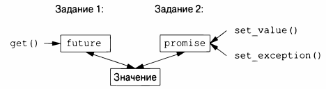
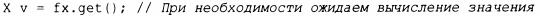
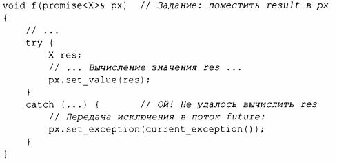
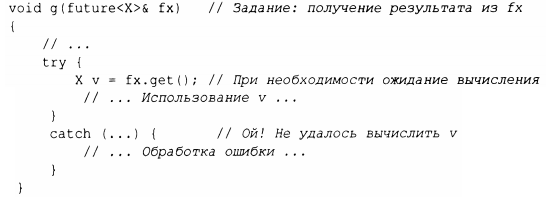
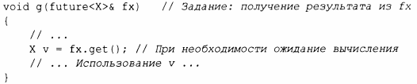

⇐15.7 Обмен информацией с заданиями 15.7.2 packaged_task⇒
Важным моментом в отношении future и prornise является то, что они позволяют передавать значения между двумя заданиями без явного использования блокировки; "система" эффективно реализует передачу. Основная идея проста: когда задание хочет передать значение другому, оно помещает значение в prornise. Каким-то образом реализация заставляет это значение появиться в соответствующем future, из которого оно может быть прочитано (как правило, тем, кем задание было запущено). Это можно представить графически следующим образом.
Если у нас есть future<X> с именем fx, мы можем получить из него значение типа Х с помощью функции get():
Если значение еще не готово, наш поток блокируется, пока не получит требуемое значение. Если значение не может быть вычислено, get () может сгенерировать исключение (из системы или переданное из задачи, из которой мы пытались получить это значение).
Основная цель promise - предоставить простые операции передачи значения (именуемые set_value() и set_exception()), соответствующие get () у future. Имена future (будущее) и promise (обещание) сложились исторически; пожалуйста, не обвиняйте и не благодарите меня за этот неограниченный источник каламбуров.
Если у вас есть promise и вам нужно передать результат типа Х в future, вы можете сделать одно из двух: передать значение или передать исключение. Например:
Здесь curren t_exception() указывает перехваченное исключение.
Чтобы обработать исключение, переданное через future, вызывающая get () функция должна быть готова где-то его перехватить. Например:
Если ошибку не нужно обрабатывать в самой функции g() , код сводится к минимуму:
